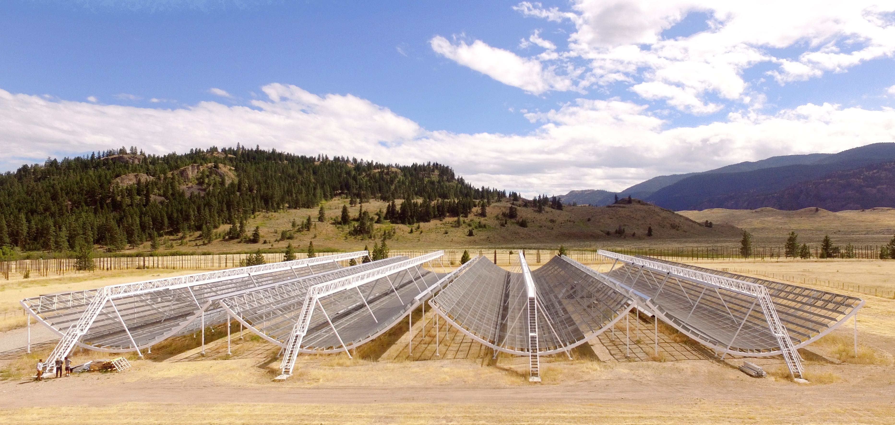

I am an assistant professor in high-energy astrophysics and an NWO Veni fellow at the University of Amsterdam's Anton Pannekoek Institute for Astronomy (UvA/API) and a visiting scientist at ASTRON, Netherlands Institute for Radio Astronomy. I co-lead the AstroFlash research group.
Research
The goal of my research is to unravel the origins of fast radio bursts (FRBs): luminous impulses of radio waves lasting only a fraction of a second that have mysterious origins outside of our Milky Way. I want to figure out why some FRBs repeat while others apparently do not and develop their use as astrophysical tools to better understand the Universe at large, which is possible as each FRB signal holds a record of the magnetized gas it has travelled through. I like finding new FRBs and pulsars with new telescopes or observing modes and I enjoy developing algorithms to enable this.
I am mainly a radio astronomer, but I have a broad experience across wavelengths, having led and collaborated in studies on pulsars and FRBs using data collected with various radio, optical and gamma-ray telescopes. I am a key member of the CHIME/FRB Collaboration that has revolutionized the study of FRBs in recent years. I also led the team that has discovered the lowest-frequency millisecond pulsars and FRBs with the LOFAR telescope.
Before moving back to Amsterdam, I was at the University of Toronto (2021 September--2023 December), where I held a Dunlap Postdoctoral Fellowship and was affiliated with Bryan Gaensler's and Keith Vanderlinde's research groups. I wrote a PhD thesis at McGill University on the detection and morphology of FRBs with the CHIME telescope, supervised by Victoria Kaspi. Before that, I wrote an MSc thesis at the University of Amsterdam on discovering millisecond pulsars with the LOFAR telescope.
Fast radio bursts with CHIME
FRBs are luminous impulses of radio waves that last only a fraction of a second and that are detectable over extragalactic distances. The first FRB was discovered in 2007, but due to the limited sky coverage of most radio telescopes at the time the FRB detection rate took a few years to pick up steam. Despite the now rapidly growing number of detected bursts, the origin of FRBs remains elusive -- although there must be a process at work that is able to generate radio waves of an unprecedented energy. As traveling radio waves are affected by the gas, dust and magnetic fields in between the source and observer, observations of FRBs are a unique probe for the constitution of the material between the galaxies in the Universe.
CHIME (see photo below) is a telescope, originally designed to measure the expansion history of the Universe, that is ideally suited to find FRBs (a few per day!). The telescope operates the octave from 400 to 800 MHz and the project to find FRBs is called CHIME/FRB. Amongs other things, I work on the real-time recognition of bursts from known sources, on the commissioning of the telescope and on the characterization of FRB bursts.
Some research highlights from CHIME/FRB so far are the detection of FRBs down to 400 MHz, the discovery of a population of repeating sources of FRBs, the discovery of a 16-day periodic activity in an FRB source and the detection of an FRB-like burst from a Galactic magnetar. We've also observed an apparent dichotomy in the time-frequency structure of bursts from repeating sources of FRBs and one-off events in CHIME/FRB's first catalog of FRBs.
We are currently working towards being able to pin-point all FRBs we detect with CHIME/FRB to within their host galaxies (i.e., to subarcsecond resolution) by constructing smaller versions of the CHIME telescope ("Outriggers") at various locations in North America to perform very-long-baseline interferometry.
Millisecond pulsars at the lowest and highest frequencies
Soon after the launch of the Fermi gamma-ray telescope it was discovered that many millisecond pulsars (MSPs) are energetic enough to be gamma-ray emitters. The combined study of the radio and gamma-ray properties of (millisecond) pulsars gives valuable insight in, e.g., particle acceleration in the magnetospheres of neutron stars. Many gamma-ray MSPs have been discovered by targeted radio follow-up surveys of unidentified Fermi gamma-ray sources.
Searches for MSPs at low radio frequencies (below 350 MHz) typically lack the sensitivity for MSPs due to the dispersive effect of the interstellar medium. As a master student at the University of Amsterdam, I helped set up a LOFAR survey for MSPs that aimed to mitigate those effects by using a different computational approach. This survey resulted in the first discoveries of MSPs at very low radio frequencies (135 MHz): pulsars J1552+5437 (2.43 ms), J0952-0607 (1.41 ms) and J0653+4706 (4.75 ms).
Using very similar techniques, we also search for low-frequency radio bursts from FRBs and magnetars with LOFAR, which has resulted in the lowest-frequency detection of an FRB to date.
Open-source software
I am a primary author of fitburst and dfdt and a contributor to DM_phase and cdmt, open-source software packages for the study of fast radio bursts and pulsars.
Publications
For a complete list, see ADS or arXiv. Underlined author names indicate students under my supervision.
2024
- Updating the first CHIME/FRB catalog of fast radio bursts with baseband data, CHIME/FRB Collaboration, ApJ 969, 145 ADS
- Polarization properties of the 128 non-repeating fast radio bursts from the first CHIME/FRB baseband catalog, Pandhi, ZP, Mckinven et al. ApJ 968, 50 ADS
- Modeling the Morphology of Fast Radio Bursts and Radio Pulsars with fitburst, Fonseca, ZP, Breitman et al. ApJS 271, 49 ADS
- Propagation effects at low frequencies seen in the LOFAR long-term monitoring of the periodically active FRB 20180916B, Gopinath, Bassa, ZP et al., MNRAS 527, 4, pp.9872-9891 ADS
2023
- CHIME/FRB discovery of 25 repeating fast radio burst sources, CHIME/FRB Collaboration (ZP corresponding author), ApJ 947, 83 ADS
2022
- The Green Bank North Celestial Cap Survey. VII. 12 new pulsar timing solutions, Swiggum, ZP, Parent et al., ApJ 944, 154 arXiv
- Sub-second periodicity in a fast radio burst, CHIME/FRB Collaboration, Nature 607, 256 arXiv
2021
- Fast radio burst morphology in the first CHIME/FRB catalog, ZP, Good, Kaspi et al., ApJ 923, 1 arXiv
- The first CHIME/FRB fast radio burst catalog, CHIME/FRB Collaboration, ApJS 257, 59 arXiv
- First discovery of new pulsars and RRATs with CHIME/FRB, Good, Andersen, Chawla et al., ApJ 922, 43 arXiv
- LOFAR detection of 110-188 MHz emission and frequency-dependent activity from FRB 20180916B, ZP, Michilli, Bassa et al., ApJL 911, L3 arXiv
- A nearby repeating fast radio burst in the direction of M81, Bhardwaj, Gaensler, Kaspi et al., ApJL 910, L18 arXiv
2020
- A bright millisecond-duration radio burst from a Galactic magnetar, CHIME/FRB Collaboration et al., 2020, Nature 587, 54--58 arXiv
- Periodic activity from a fast radio burst source, CHIME/FRB Collaboration et al., 2020 Nature 582, 351–-355 arXiv
- Detection of Repeating FRB 180916.J0158+65 Down to Frequencies of 300 MHz, Chawla, Andersen, Bhardwaj, et al., 2020, ApJL 896, L41 arXiv
- Nine new repeating fast radio burst sources from CHIME/FRB, Fonseca, Andersen, Bhardwaj, et al., 2020, ApJL 891, L6 arXiv
- A repeating fast radio burst source localised to a nearby spiral galaxy, Marcote, Nimmo, Hessels, et al., 2020, Nature 577, 190--194 arXiv
2019
- CHIME/FRB detection of eight new repeating fast radio burst sources, CHIME/FRB Collaboration, 2019, ApJL 885, L24 arXiv
- CHIME/FRB detection of the original repeating fast radio burst source FRB 121102, Josephy, Chawla, Fonseca, et al., 2019, ApJL 882, L18 arXiv
- A second source of repeating fast radio bursts, CHIME/FRB Collaboration, 2019, Nature 566, 235--238 arXiv
- Observations of fast radio bursts at frequencies down to 400 megahertz, CHIME/FRB Collaboration, 2019, Nature 566, 230--234 arXiv
2018
- PALFA single-pulse pipeline: new pulsars, rotating radio transients and a candidate fast radio burst, Patel, Agarwal, Bhardwaj, et al., 2018, ApJ 869, 181 arXiv
- The CHIME Fast Radio Burst project: system overview, CHIME/FRB Collaboration, 2018, ApJ 863, 48 arXiv
2017
- LOFAR discovery of the fastest-spinning millisecond pulsar in the Galactic field, Bassa, ZP, Hessels et al., 2017, ApJL 846, L20 arXiv
- A millisecond pulsar discovery in a survey of unidentified Fermi gamma-ray sources with LOFAR, ZP, Bassa, Hessels et al., 2017, ApJL 846, L19 arXiv
- Enabling pulsar and fast transient searches using coherent dedispersion, Bassa, ZP, Hessels, 2017, Astronomy and Computing 18, 40 arXiv
Other writing
- For a "Behind the Paper" view on the first FRB detections by CHIME/FRB, Shriharsh Tendulkar and I wrote a blog post for the Nature Research Astronomy Community (2019).
- Slides on how to best prepare scientific posters for students of a graduate course in astronomy at McGill University (2017; I still agree with these tips).
- Slides on how to best prepare scientific talks for summer undergraduate research students at McGill University (2017; I still agree with these tips).
Student projects
Please feel free to email me if you are interested in working on a research project with me.
Consider applying to the UvA/API's ASPIRE program or ASTRON's Summer Research Programme for funded summer research positions.
I will be advertising a PhD position to start in autumn 2025, see UvA/API PhD recruitment process.
Teaching
In Fall 2022 I co-taught AST 3100 Astrophysical Transients with Professor Marten van Kerkwijk for graduate students in astronomy and astrophysics at the University of Toronto.
Recordings of the fast radio burst multi-wavelength follow-up workshop that we've held in Toronto and online April 25 and 26, 2023 are available on YouTube
In the press
- De Volkskrant wrote about the discovery of 25 repeating FRB sources by CHIME (in Dutch).
- I was interviewed live on CTV News about sub-second periodicity in an FRB.
- Scientific American published a recap of our current understanding of FRBs.
- Our first catalog of FRBs was reported on by Sky & Telescope.
- EarthSky wrote about the lowest-frequency detection of FRBs with LOFAR.
- Vice, the Globe and Mail and the Associated Press wrote about the FRB-like burst from a Galactic magnetar that we detected with the CHIME telescope. You can hear me talk about this result on CBC radio's Quirks and Quarks and on BNR nieuwsradio (in Dutch).
- The McGill newsroom released an article about periodic activity in a fast radio burst source.
- Sky & Telescope wrote about the first fast radio burst detected by CHIME.
- CHIME's first light was reported on by the Globe and Mail and CBC.
- ASTRON and NASA wrote a press release on LOFAR's first millisecond pulsar discoveries that was adopted by several news outlets, among them CBC.